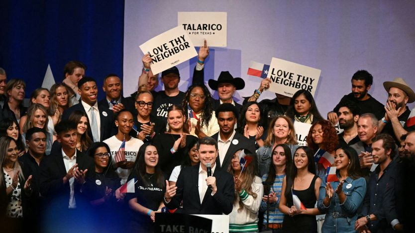

民主党大胜，对特朗普的一次否定
A landslide for Democrats. A rebuke to Donald Trump
共和党迎来一个动荡的新时代

- 民主党全国普选票领先约13个百分点，拿下参议院至少54席、众议院近260席，是上世纪七十年代以来最大规模的国会选举胜利，得州、堪萨斯等共和党铁盘同时失守。
- 拉美裔选民大幅回流是转折点：2024年特朗普曾把民主党在这一群体的优势缩小22个百分点，共和党据此在南方推动选区重划，结果反被这一转向抵消，佛州与得州多个重划选区被民主党拿下。
- 生活成本是共和党的致命伤：汽油同比贵近四成、房贷利率处三年最高、通胀连续六个月跑赢工资；加上伊朗战争与关税，独立选民大规模倒向民主党。
- 民主党仍未取得足以推翻总统否决的多数，政策上难有大动作；共和党则进入内耗期，效忠特朗普的政客在初选与大选之间两头受挤。
特朗普进入中期选举时，净支持率是八十年来任何一位总统在同一任期阶段的最低水平。再加上在野党在中期选举中几乎总能拿到更多席位这一不利信号，共和党败选几乎已成定局。但他们遭遇的是一场溃败。
民主党有望在全国众议院普选票上领先约13个百分点，比民调均值高出约4个百分点，是上世纪七十年代以来最大的国会选举压倒性胜利。他们已经拿下参议院至少54比46的多数，包括艾奥瓦、俄亥俄、南卡罗来纳、得州和堪萨斯这些共和党铁盘——堪萨斯自1932年以来就没选出过民主党参议员。阿拉斯加大概率也会拿下；东部时间凌晨3点，他们在密西西比竟领先43票，而特朗普2024年在该州赢了23个百分点。很多民主党参议员候选人的赢面惊人：北卡20个点、佐治亚18个点、得州11个点。
蓝色海啸也淹没了众议院和州长选战。民主党有望在众议院拿下近260席，多数优势比2008年金融危机时还大。希诺霍萨（Gina Hinojosa）以7个百分点的舒适优势当选得州州长，民主党还翻转了佐治亚、俄亥俄和艾奥瓦的州长官邸。在阿拉斯加、内华达以及领先微弱的堪萨斯，尚未完成的计票中他们也占先。
参议院选情一开始对民主党相当不利。他们需要翻转四个席位才能控制参议院，其中至少两个位于特朗普2024年以两位数优势拿下的州。但最终，对民主党有利的政治大环境压过了对共和党有利的选举地图。总统曾承诺降低美国人的生活成本、结束无休止的战争。结果他一头撞进与伊朗的冲突，发动全球贸易战，看上去更关心家族财富而非普通美国人。特朗普这次的惨败让人想起2006年的小布什——伊拉克战争期间，共和党丢掉了国会两院。
选举日之前就很清楚：民主党选民热情高涨，特朗普失去了独立选民。真正的问题是民主党能深入共和党地盘到什么程度。特朗普帮了他们大忙。在北卡，他的攻击把共和党参议员蒂利斯（Thom Tillis）逼到退休，让颇受欢迎的前民主党州长库珀（Roy Cooper）得以争夺空出的席位。在得州，他支持帕克斯顿（Ken Paxton）挑战现任共和党参议员科宁（John Cornyn），反而抬升了民主党人塔拉里科（James Talarico）。堪萨斯和佐治亚也一样，特朗普背书的共和党参议员候选人，像是民主党战略师做噩梦时才想得出来的：堪萨斯的马歇尔（Roger Marshall）是个起诉过孕妇的医生；佐治亚的柯林斯（Mike Collins）与白人至上主义者有牵连。
拉美裔选民的转向非常醒目。2024年特朗普把民主党在这一群体中的领先优势缩小了22个百分点。为了保住今年的众议院选情，共和党在南方各州掀起一轮“十年中期的选区重划”，赌的是拉美裔的转向能守住。他们赌错了。本刊的初步分析显示，拉美裔人口占比较高的县这次大幅倒向民主党。
比如得州南部边境的韦布县，2020年拜登在这里赢了23个百分点，2024年特朗普反赢2个点。今年塔拉里科在该县赢了惊人的47个百分点。
这一群体的回流几乎让佛罗里达和得州的选区重划努力化为乌有。靠着拉美裔选民的支持，佛州3名、得州至少3名民主党人在特朗普赢下的重划选区中获胜。
黑人选民的高投票率，让南方在同一次选举中选出4名民主党参议员，这是2008年以来首次。亚特兰大前市长博顿斯（Keisha Lance Bottoms）以8个点的优势当选佐治亚州长，将成为美国历史上第一位黑人女性州长。
竞选最后阶段，共和党几乎无话可说。汽油价格比一年前贵了近40%，柴油价格接近历史高位。房贷利率处于三年最高；通胀已连续六个月跑赢工资增长。特朗普的关税砸在农业州头上。他唯一的立法成果是大幅削减社会安全网。他最主要的“成就”——关上南部边境——被大规模驱逐行动的残酷所掩盖。在竞选路上，很多共和党人只能靠煽动对社会主义、政治正确和伊斯兰的恐惧。特朗普把密歇根进步派参议员候选人埃尔-赛义德（Abdul El-Sayed）称作“圣战分子”。
对民主党来说，这次选举不会开启一个制定政策的新时代——他们仍未达到足以推翻否决的多数——但这是一场毫无争议的政治胜利。对共和党来说，选举标志着一个动荡新时代的开始。十年来，特朗普把共和党牢牢锁在臂弯里。那些或自愿或不情愿向他效忠的政客，如今面临艰难选择：批评特朗普，他可能在初选中终结你的职业生涯；紧抱他不放，他可能在正式选举中终结你。■